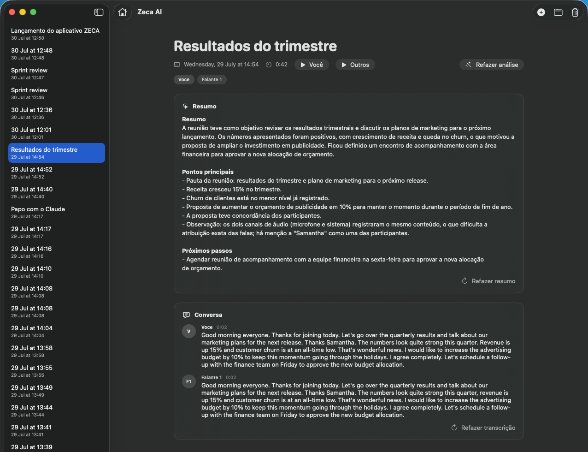
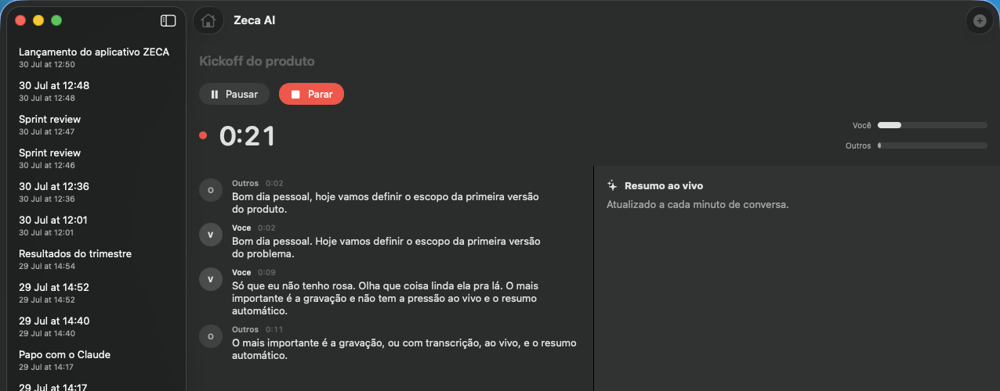
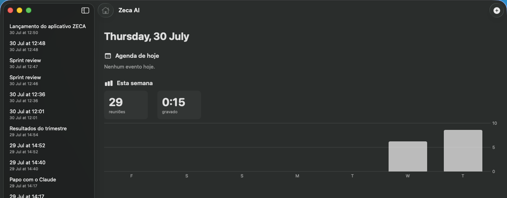

O Zeca grava, transcreve e resume cada reunião enquanto ela acontece. Tudo roda no seu Mac.

Você fala, o texto aparece. A transcrição roda durante a gravação, frase a frase, com o seu lado da conversa separado do lado dos outros. Entende dezenas de idiomas e descobre sozinha qual está sendo falado.

Quando você para de gravar, o resumo já está pronto: o que foi discutido, o que ficou decidido e o que falta fazer. Durante a conversa, ele se atualiza a cada minuto. E cada fala tem dono, porque o Zeca reconhece quem está falando pela voz.
O dashboard mostra os compromissos de hoje, com um clique para entrar na call já gravando. E conta quanto da sua semana foi parar em reunião.

Grava o microfone e o áudio do sistema em trilhas separadas. Funciona com qualquer app de reunião.
Identifica os participantes por voz e separa as falas. Renomeie com dois cliques.
Esqueceu de nomear? O Zeca batiza a reunião pelo assunto da conversa.
Português, inglês, espanhol e dezenas de outros. Pode até misturar na mesma reunião.
O que acontece na pausa fica fora da gravação, da transcrição e do resumo.
O tempo e o título da gravação ficam na barra de menus. Pausar ou parar não exige trocar de janela.
O áudio nunca deixa o seu computador. A transcrição e a identificação de falantes rodam no próprio Mac, no Neural Engine. A única coisa que vai pra nuvem é o resumo, feito com a sua chave da API. Sem chave, sem nuvem.